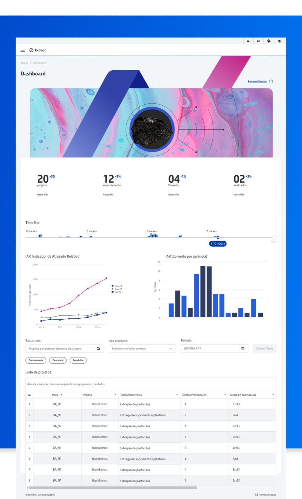
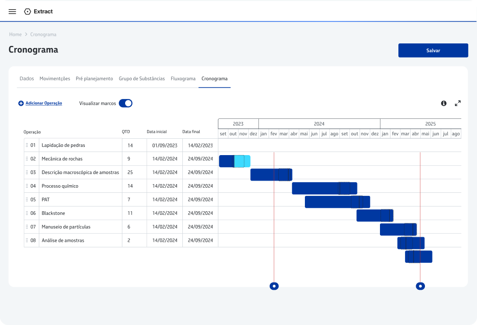
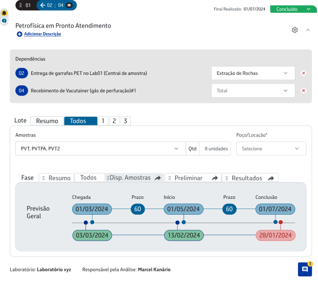
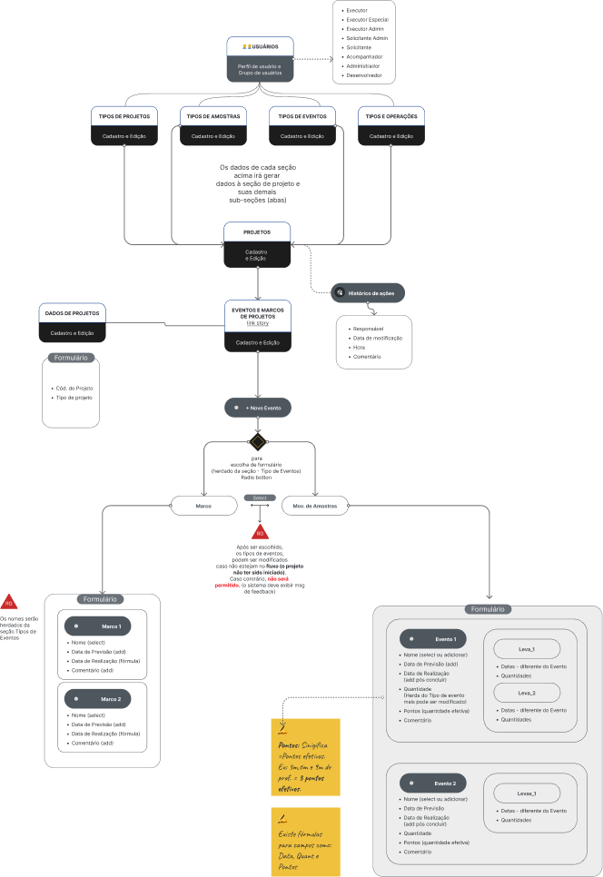

Case studyCase
Rock Sample Extraction Management System Sistema de Gestão de Extração de Amostras de Rocha
Extract is a software that manages the entire end-to-end process of picking and exploring small rock samples, verifying and delivering qualitative and quantitative validation for labs. Extract é um software que gerencia todo o processo ponta a ponta de coleta e exploração de pequenas amostras de rocha, verificando e entregando validação qualitativa e quantitativa para os laboratórios.
First of all, we did a deep dive to understand the real problem. All the context was built through a discovery process and strategy meetings with stakeholders. I facilitated Lean Inception sessions to gather more information and create a prototype for validation. Antes de tudo, mergulhamos fundo para entender o problema real. Todo o contexto foi construído por meio de um processo de discovery e reuniões estratégicas com stakeholders. Facilitei sessões de Lean Inception para reunir mais informações e criar um protótipo para validação.
Process & screensProcesso e telas




